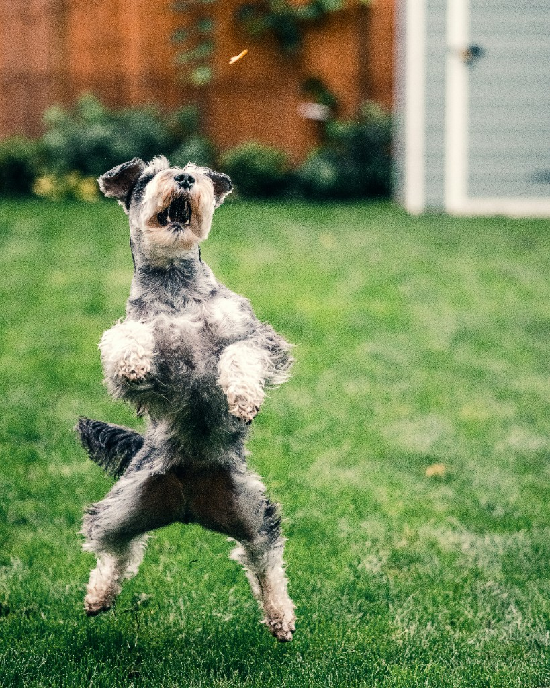

Episode 51 · May 20, 2026 · 2041
Does your dog jump on you? Avoidance training & starting them out right the right way.

About This Episode
In this episode we talk about jumping dogs. No one loves dogs that jump all over you. We talk about starting your dog out right when it comes to jumping and the psychology of getting them not to jump and correcting jumping. Also, go over avoidance training with a dog and how that works. Enjoy and good training!
Questions about the training topics in this episode? Tyce works with bird dog owners and hunters through Utah Bird Dog Training. Reach out to work with him directly.
Resources & Links
- The Gunshy Fix — Sound conditioning program for gunshy dogs.
- Kuranda Dog Beds — Elevated, chew-proof dog beds.
- Utah Bird Dog Training — Tyce's professional training services.
Transcript
Full transcript for Episode 51: Does your dog jump on you? Avoidance training & starting them out right the right way..
Tyce
Hey everyone, welcome to the Bird Dog Podcast. My name is Tyce. I've been training gun dogs professionally for the last 20 years here in Utah — pointers, retrievers, crossbreeds, all of it. The information I share here comes from real-life experience working with these animals day in and day out. Thanks for listening.
Today's topic is jumping — why dogs jump on people, how it gets built in from the beginning, and how to use avoidance training to fix it. It's one of the most common complaints I hear from dog owners, and it's almost always a problem that was created by the people, not the dog.
It starts with puppies. Puppies love to put their feet up on things — they do it naturally. And what do we do? We reach over, scratch them on the head, pet them, tell them how cute they are. The puppy's feet are up on something, you're giving them physical praise. You're essentially giving them a treat every time their feet go up on something. Then the pup comes out of the whelping pen and jumps up on you, and you lean in and pet them again. You've been rewarding that behavior since day one without realizing it.
The problem is that little puppy becomes a big puppy. Now it's muddy, or it just walked through its own mess, and it launches itself at your nice clothes or at a kid. Nobody wants that. The behavior that seemed cute at eight weeks is genuinely annoying at eight months, and by then it's deeply ingrained.
Consistency is everything here. If you let your dog jump on you sometimes and correct it other times, you haven't taught it anything. You've just taught it to keep trying. The rule has to be clear and consistent: four paws on the floor, always. That starts with everyone in the household being on the same page.
Avoidance training is one of the most effective ways to address unwanted behaviors like jumping, chewing, and excessive barking. The concept is simple: the dog learns to avoid a behavior because doing it produces an immediate, unpleasant consequence. You're not chasing the dog down and correcting it after the fact — the correction happens the instant the behavior occurs, which is the only way the dog can connect cause and effect.
With an e-collar set to an appropriate level, the correction is instant and precise. Dog puts its feet up on someone — correction fires immediately. Dog tries it again — correction fires again. After a few repetitions the dog figures out that jumping is the thing that produces the unpleasant feeling, and it stops. It's not complicated, but the timing has to be exact. A delayed correction is a wasted correction.
You can start this around four months of age for most dogs, though even a bold puppy younger than that could handle it. The key is setting the level appropriately — high enough that the dog clearly registers it and changes behavior, not so light that it barely notices and keeps testing. Think of how a mother dog corrects her pups: sharp, precise, and clear. That's the model.
One important caveat: using an e-collar for avoidance training on specific behaviors like jumping is different from using it as a tool for obedience conditioning. For simple behavior corrections — jumping, chewing, barking — the dog doesn't need to be formally collar conditioned first. The correction is self-explanatory in context. But if you want to use the e-collar to reinforce obedience commands like here, heel, or whoa, the dog absolutely needs to be properly introduced to e-collar pressure first. That's a gradual, methodical process. Dogs that get pushed too fast with an e-collar in obedience training end up confused and lose confidence. A dog that's done right wears a collar confidently and works happily. There's a real difference, and it matters.
On collar recommendations: don't go cheap. A $40 Amazon collar is inconsistent, the battery life is unreliable, and inconsistency is the worst thing you can have in this tool. The collar I use and recommend most is the Garmin Pro 550. It retails around $400 — yes, that's real money — but it's consistent, the connection is reliable, and most dogs end up working between levels two and four on the low setting. It does everything you need it to do. Dogtra and SportDOG are both solid options in the $200–300 range. The SportDOG 1825 runs a little hotter than the Garmin, so keep that in mind when setting levels. I'd put Garmin, Dogtra, and SportDOG as my top three. Anything under $200, save your money and buy something better — it's not worth the inconsistency.
The summary on jumping and avoidance training: catch it early, be consistent, and use the right tools correctly. If you correct your dog every single time it jumps — without exception — it'll stop jumping. The behavior only persists when we allow it to. Fix the inconsistency and you fix the problem.
Thanks for listening today. Hunting seasons are right around the corner — get out there and train. Even 10 or 15 minutes a day with a focused, positive session will build your dog into what you need. Train how you're going to hunt, and you'll have a dog that's ready when it counts. See you in the next episode.
About the Host
Tyce Erickson
Tyce Erickson is a professional bird dog trainer and the owner of Utah Bird Dog Training in Utah. For nearly two decades he has worked with pointing dogs, retrievers, and family hunting dogs — helping owners build dogs that are capable and enjoyable in the field. The Bird Dog Podcast is an extension of that work: honest conversations on training, hunting, breeding, and everything that goes into a life spent working dogs.
More About Tyce